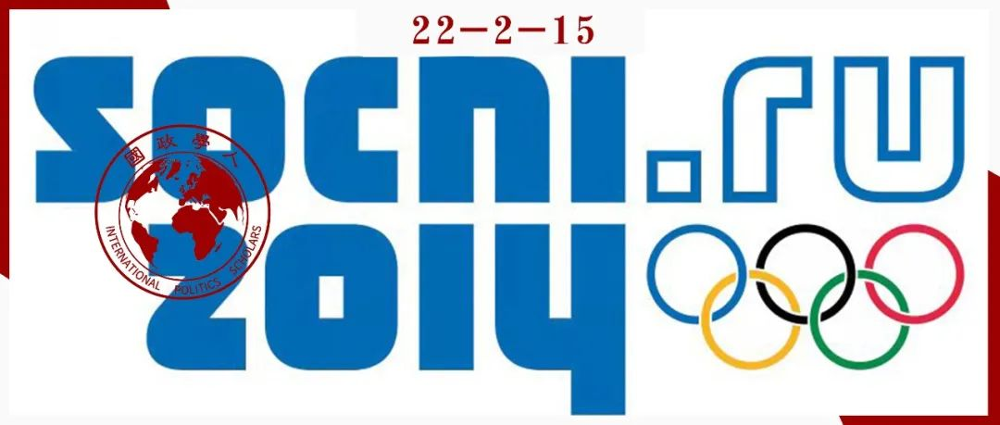

收录于合集

作品简介 ****
作者： Jonathan Grix，曼彻斯特城市大学体育政策教授，Nina Kramareva是伯明翰大学体育政治学博士。
编译： 王芷汀 （国政学人编译员 约翰霍普金斯大学保罗尼采高级国际关系研究院）
来源： Jonathan Grix & Nina Kramareva (2017) The Sochi Winter Olympics and Russia’s unique soft power strategy, Sport in Society , 20:4, 461-475.

导 读
本文作者综述了 **俄罗斯的软实力战略为什么不像其他 新兴发展中国家那样，利用体育大型赛事来展示国家软实力？**包括金砖国家在内的新兴国家试图通过举办奥运会来发挥软实力，本文提出， 索契冬奥会不仅仅是作为外部“信号”活动，其主要目标是激发自我价值感、爱国主义和培养可行的国家理念，为随后的吞并克里米亚和乌克兰武装冲突奠定民意基础。 通过对当前文献、官方政治话语以及奥运会筹备阶段和整个奥运会期间传递的信息， 本文跳出西方视角，创新性地提出俄罗斯的软实力战略更面向于国内民众而不是国际层面。 软实力战略对国内的影响将是未来研究各国软实力战略的一个重要方向。2022年北京冬奥会同样会激发国内民众的爱国热情、民族认同和自豪感。
本文提出观点，即 俄罗斯 举办索契奥运会和将克里米亚并入是相辅相成的事件，旨在为新兴可行的国家认同奠定基础，而不是对俄罗斯“大国”地位的宣称。 因此，我们认为 俄罗斯的软实力议程主要针对的是国内民众，这与发达国家和其他“新兴”国家的软实力议程以及以前的大型体育赛事主办方形成鲜明对比。
01
大型活动：理论方法
对于1990年提出软实力的 约瑟夫·奈 来说，鉴于冷战结束后国际关系的变化性质以及部署传统军事形式的权力所带来的风险，各国应该寻求使用软实力（传统上称为“硬实力”）。 这种软实力由“文化、意识形态和制度等无形的权力资源”组成，在国家间关系中显然变得越来越重要。 并对“影响他人的行为以获得自己想要的结果”的能力（强制力）和“吸引和选择他们想要你想要的东西”的能力（软实力）进行了区分。 约瑟夫·奈表示俄罗斯总统普京“未能利用索契冬奥会提升俄罗斯的软实力”。 该地区全年的政治动荡，俄罗斯随后采取的行动——最终将克里米亚并入——及其在乌克兰武装冲突中的立场，显然证明了这一点。 本文阐述了为什么奈和其他人在评估俄罗斯软实力战略是错误的。认为俄罗斯试图通过索契冬奥会获得迟来的大国认可这一说法误解了奥运会及其对俄罗斯的意义。
精英体育和大型赛事使西方文明标准永存和合法化，可以被视为“软文化殖民化”的一种变体。 因此，包括金砖国家在内的新兴国家试图通过举办奥运会来发挥软实力， 只有在其现代性与新自由主义发展范式相一致的情况下才有成功的机会。这首先是因为 无论主办方如何努力，西方媒体的批判性框架往往占上风，挖掘出主办方政治制度和社会秩序的所有缺陷，并集中体现在活动准备过程中。 由于大型活动作为放大镜，突出了积极的文化方面，但也突出了不受欢迎的事实，发展中国家的替代性的现代性往往无法获得普遍赞誉。 另一方面，它提出了一个关于西方媒体霸权世界观的顽固性的问题，这样的排他性没有适当考虑其他可能的受众。 由此，新兴国家的软实力项目可能更具选择性，主要针对具有可比政治经济和发展水平的其他国家，或针对其所在地区的国家（而不是旨在拥抱整个世界）。 对于俄罗斯而言，这些雄心勃勃的活动在传统上会优先考虑国内观众，而不是专门向外国公众“发出信号”。因此，索契冬奥会的设计首先是作为国内软实力的来源，而不仅仅是作为外部“信号”活动。
因此，可以进一步提出， 俄罗斯软实力议程的主要目标是激发自我价值感、爱国主义和培养可行的国家理念。 值得注意的是，在俄罗斯索契奥运会的框架下，类似战争的言论很普遍。因此， 索契冬奥会是由普京政府推动的，这一观点得到了很大一部分民众的热切支持，认为这是一场西方与俄罗斯之间持续不断的战争， 而西方媒体对好战的假设只会加强这一观点。因此，与 20 世纪的第二次世界大战相比， 2014 年冬季奥运会具有双重目的，受统治精英的委托，点燃爱国情绪，并被视为统一的文化象征，奠定了基础为强大的新俄罗斯神话的出现。 这与一个国家发展的集体共同时刻有关。 索契冬奥会与将克里米亚并入这两个事件是普京目标背后的“国内整合”力量，也是国内软实力的触发因素。 也就是说，俄罗斯试图通过向国内观众提供越来越多的俄罗斯民族叙事感来影响他们。
2
** 克里米亚策略——“牵制”战争还是“大国”梦想成真？**
西方媒体和学术界普遍不理解俄罗斯将克里米亚并入的原因，甚至认为克里米亚行动是俄罗斯为了掩盖其在冬奥会上的失败而制定的。然而， 乌克兰的政治政变与俄罗斯的奥运会同时发生，似乎是有意安排的。 虽然这一国际谴责的举动，因克里姆林宫在乌克兰问题上的立场进一步加剧，导致西方严厉的经济和政治制裁，从而使任何传统意义上的软实力都无法实现，但它仍然 实现了普京最重要的目标（国内) 迄今为止的软实力议程——即将国家意识提升到后苏联历史上前所未有的水平。
在普京看来，2014 年索契冬奥会以及克里米亚的策略这两个事件相辅相成，既代表了“基本的国家价值观和任务”，又为“基本国家价值观和任务”奠定了基础，从而有助于克服社会和阶级分歧。
俄罗斯违背自身软实力利益的行为，主要是由于其对全球战略问题的看法不断忽视， 西方精英不愿为俄罗斯一体化找到共同点和途径，更不用说接受其对大国地位的主张。 这在逻辑上导致了生存和安全问题的升级和随之而来的自信的新修正主义行为。 处于接受国际参与或“霸权秩序”或“转向彻底修正主义”的十字路口，俄罗斯似乎已经下定决心支持后者。这对俄罗斯的软实力议程意味着，如果他们不完全让位于不受限制的硬实力政治，则势必会转向伊斯兰世界，这体现在恢复伊朗与俄罗斯的核合作上。
尽管普京最初寻找与欧盟和美国更密切合作的机会，但有人坚持认为，这样做并不是出于制度和政治一体化的愿望，而是完全出于对国家经济利益和政治现实主义的追求， 尽管不是负责意识形态的“宏伟设计”或“传教功能”（missionary functions）。然而，这与几个世纪以来标志着俄罗斯外交的“带有强烈意识形态色彩的现实主义”并不矛盾。 新的俄罗斯意识形态的兴起和性质，以及随之而来的政治行动，取决于克里姆林宫，其程度取决于西方政府是否渴望平等地与俄罗斯接触或继续将其视为劣等伙伴。然而，索契奥运会象征性地标志着世界政治和俄罗斯民族雄心的分水岭。
3
俄罗斯新国家理念的基石：大型体育赛事
俄罗斯还遇到了一个更为根本的问题，即形成一个可行的国家理念，将多民族团结在一起。 在西方旁观者看来，俄罗斯希望在国际关系中对外表现出温和而负责任的形象。对内（即对国内观众）旨在点燃对西方世界的敌意，进而利用西方这样一日趋分裂的群体。
索契冬奥会后，俄罗斯逐渐呈现出日益明显的帝国身份及反对西方主导国际事务的特点。 在这方面，索契奥运会有望为俄罗斯人民提供一个面向未来的国家象征。它们将成为普京领导新一代人民的参照点，成为重振辉煌民族认同的里程碑。 从西方的角度来看，克里姆林宫对乌克兰的政策在逻辑上是不合理的，但它完全符合俄罗斯国内的文明话语 ，尤其是俄罗斯强大到足以强制部署其软实力，而无需考虑是否与欧盟和美国发展关系。
4
结论
本文认为俄罗斯并没有像大多数其他国家那样使用外向型的软实力战略，其战略更面向于国内而不是国际层面。索契奥运会和随后的将克里米亚并入，分别体现了软实力和硬实力的应用。因此， 尽管大多数大型体育赛事的软实力战略旨在帮助主办方提升其国际声望，但俄罗斯的案例则不同，它强调国内观众，并且有俄罗斯民族意识和自我认同的动员迹象。
现在有一点很清楚：乌克兰的冲突挑战了克里姆林宫国际软实力主张的本质和可持续性，其复苏需要采取战略行动。乌克兰事件已成为亚特兰蒂斯主义与欧亚主义、自由民主与威权主义之间的全面较量，其结果将在很大程度上决定俄罗斯的软实力和大国野心以及未来很长一段时间的前景。
参考文献
[1] Al-Emadi A, Kaplanidou K, Diop A, Sagas M, Le KT, Al-Ali Mustafa S. 2022 Qatar World Cup: Impact Perceptions among Qatar Residents. Journal of Travel Research. 2017;56(5):678-694.
词汇整理
美利坚治世 Pax Americana ****
大俄罗斯 Great Russia
传教功能 missionary functions
主权民主 sovereign democracy
审校 | 谭伟业 卫艺璇
排版 | 臧泽华 叶拯
文章观点不代表本平台观点，本平台评译分享的文章均出于专业学习之用, 不以任何盈利为目的，内容主要呈现对原文的介绍，原文内容请通过各高校购买的数据库自行下载。